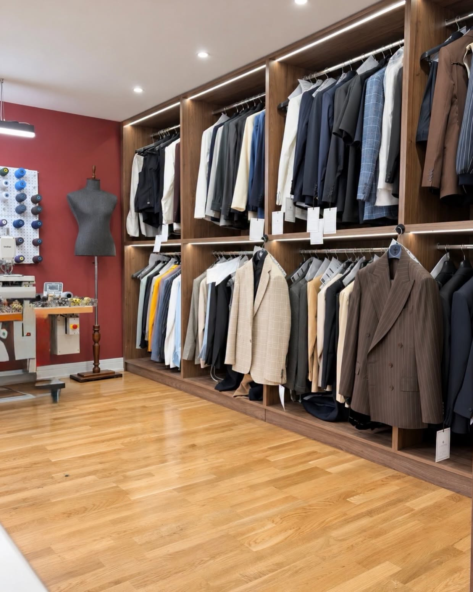
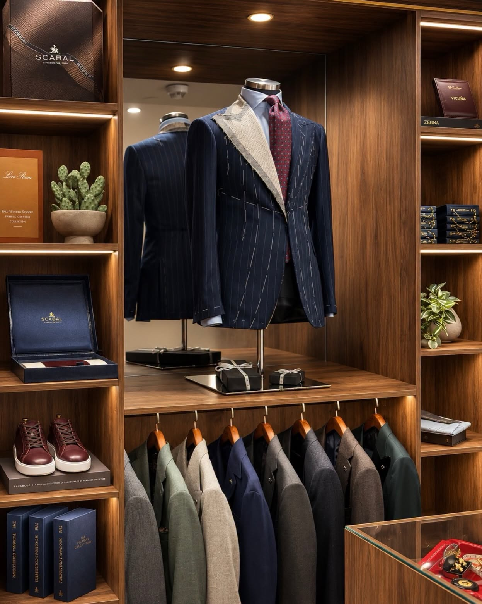
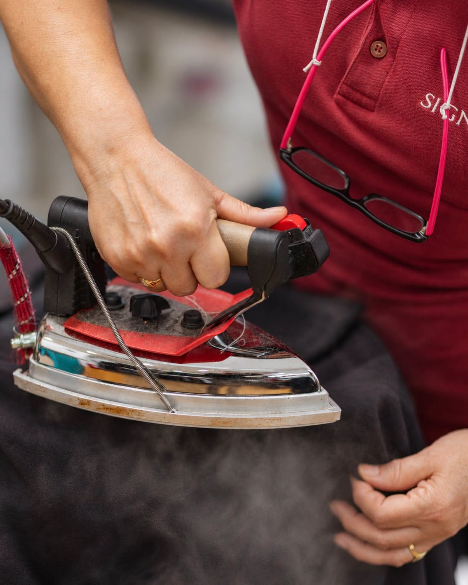
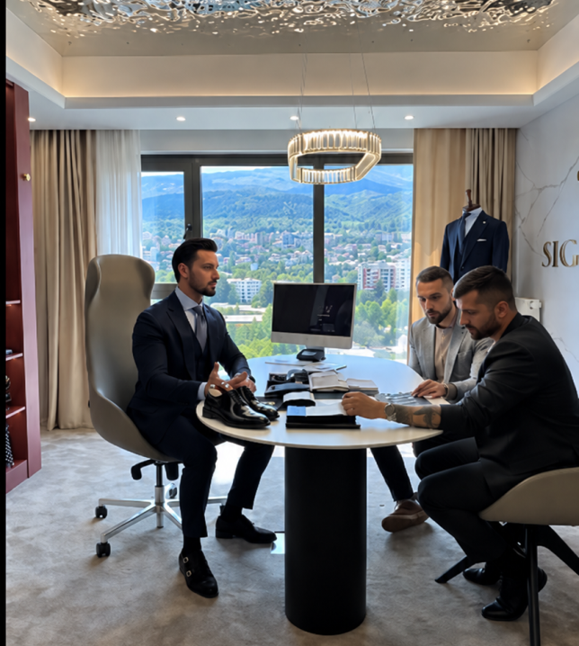

SIGNORI is a bespoke tailoring company that prides itself on a fervent pursuit of perfection. It was established in 2014 by Nenad Pantovic and Kristijan Popovski. Our craftsmen use only the highest quality materials available in the market to meticulously create tailor-made suits. Our company's core lies in the cutting table, where skilled hands bring to life "The Tailored Suit," followed by the production of complementary accessories. Our team of expert stylists is dedicated to helping you choose the perfect ensemble for any occasion, custom-designed to your specifications and requirements.



BESPOKE TAILORING IS MORE THAN CLOTHES,
IT’S A WAY OF LIFE:
Each garment we produce at SIGNORI requires a considerable amount of time and attention to detail, akin to the creation of a painting on canvas. Every stitch, every pass of the steam iron, and every treatment of the lapels and their curvature must be executed with utmost precision. The result is a puzzle-like assembly of lines, squares, and stitches that come together seamlessly to bring our clients' designs to life.
40 HRS
Every garment is a masterpiece crafted with meticulous attention to detail. Each stitch, line, and square falls into place like a puzzle to create the customer's unique design. The tailors archive all details in the customer's personal dossier for future orders, and each suit requires around 40 hours of finishing and packaging, featuring about 30,000 stitches.

Design
Our bespoke suits are meticulously crafted with the finest materials to meet your specific needs and preferences. Our team of professional style consultants will work closely with you to design a unique suit that reflects your personality and style.
Create
Our master tailors possess over four decades of experience in Neapolitan tailoring. Each garment is carefully handmade, taking a minimum of 40 hours to create. We use only the finest materials to ensure that your suit is durable and long-lasting, allowing you to enjoy it for a lifetime.
Enjoy
Our goal is for every customer to experience the satisfaction of wearing a suit that feels like a second skin.